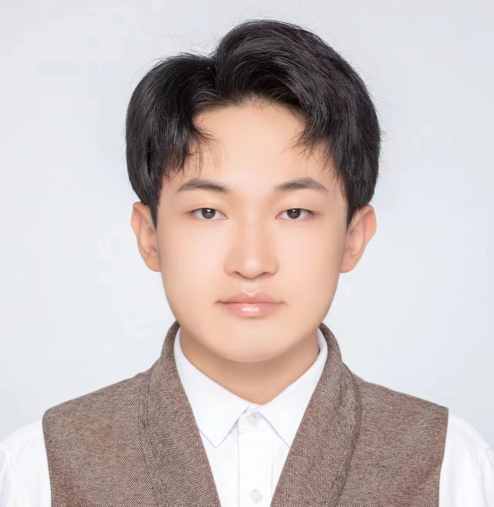
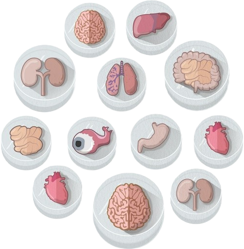

Welcome to My Academic Site
MedInnovate | EvolveHealth | InspireBio
About Me
I am Renjie (Rayn Jay) Mei, a potential researcher specializing in Bio-Electronics Interface and an enthusiastist at Brain-Computer Interface. Currently, I am pursuing my undergraduate degree in Intelligent Medical Engineering at Southern University of Science and Technology (SUSTech), P.R. China. My research experiences center on metal-polymer condutor electrodes for biomedical applications.
Outside of academia, I enjoy video games, billiards (or snooker), photography, and exploring the intersection of technology and art. I believe that creativity and curiosity are the driving forces behind meaningful innovation.

Education Background

Southern University of Science and Technology, P. R. China
2022 - 2026B.E. in Biomedical Engineering, Intelligent Medical Engineering Track
Advisor: Prof. Jiang
Research Interests
- Brain Computer Interface
- Flexible Electronics
- Neuroscience for Vision
-

Organoid Interfaces
Internship Experience

Roumai Medical, Nanshan Distinct, Shenzhen, China
Jun. 2025 - Sept. 2025Internship in Flexible Bioelectrodes
Focus on flexible electrodes fabrication for organoid interface establishing.
BME YES! BUT WHY?
As human longevity continues to rise, the challenges posed by neurodegenerative disorders and chronic conditions have become increasingly salient. Mere extension of lifespan is no longer sufficient; instead, the preservation of high-quality life—encompassing both physical and cognitive vitality—has emerged as a critical priority. This imperative underscores the need for sophisticated biomedical technologies capable of seamless integration with the human body, facilitating early diagnosis, real-time physiological monitoring, and targeted therapeutic intervention.
My academic and research endeavors are centered on the intersection of Bio-Electronic Interfaces and flexible electrode systems, with the objective of advancing next-generation neurotechnologies that enhance human health and functional performance. Currently pursuing a Bachelor's degree in Intelligent Medical Engineering at the Southern University of Science and Technology, my work focuses on two key areas: the development of metal-polymer composite electrodes for biomedical applications and the refinement to optimize the functionality of medical devices.
By harnessing interdisciplinary advancements in materials science, bioelectronics, and artificial intelligence, I seek to develop pragmatic solutions that empower individuals to lead healthier, more fulfilling lives amid the demographic shift toward extended longevity. Such innovations hold the potential to redefine healthcare paradigms, enabling proactive health management and restoring functional autonomy for diverse populations.
Soft Skills
Something Not That Important
SUSTech
Here are some photos I took at SUSTech and nearby locations, capturing the vibrant campus life and beautiful surroundings.


Jiang's Lab


Hometown


Travel


Grand Prix